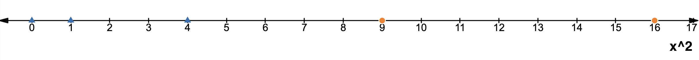

Classification - Answers
- What distinguishes classification from regression?
- Regression predicts continuous value, while classification predicts discrete value
- Regression is a supervised learning problem, while classification is not
- Prediction from classification has to be one of {-1, +1}
- Classification and regression are same
Explanation: Classification is also a supervised learning problem. Classification does not have to predict one of {-1, +1}, it could be {0, 1} or any other labeling system that distinguishes two or more classes.

- What is a good decision boundary for the given dataset?
(b) \(x_1 = 1\)
Explanation: Line \(x_1 = 1\) perfectly separates blue points from orange points, so it is a good decision boundary.
- Given the same data points and decision boundary \(x_2 = 3\), how would the point \((1, 1)\) be classified?
(c) Need more information
Explanation: Decision boundary alone does not give us information about which side of the boundary would be classified as orange vs blue.
- What does the learning algorithm for finding a decision boundary need to decide?
- Position of the decision boundary for training data
- Shape of the decision boundary for testing data
- Whether to contort the decision boundary to classify training data better
- Whether to contort the decision boundary to classify testing data
Explanation: Learning algorithm needs to decide shape and position of the decision boundary for the training data. It also needs to decide how much to contort the decision boundary to classify the training data better.
- For the data points \([(1, 1), (2, 1), (0, 1), (-1, -1), (-2, -1)]\), calculate the error of classifier
Answer: 0.2
Explanation:
Given the classifier description, the data points are classified as the following h(1) = 1, h(2) = 1, h(0) = -1, h(-1) = -1, h(-2) = -1.
To evaluate the error, we need to calculate the following formula. \(\varepsilon(h; \mathcal{D}) = \frac{1}{|\mathcal{D}|} \sum_{(x, y) \in \mathcal{D}} \llbracket h(x) \neq y \rrbracket\).
Since we have 5 datapoints, \(|\mathcal{D}|\) = 5.
Plugging everything in, we get
\(\varepsilon(h; \mathcal{D}) = \frac{1}{|\mathcal{D}|} \sum_{(x, y) \in \mathcal{D}} \llbracket h(x) \neq y \rrbracket \\ = \frac{1}{5} (\llbracket 1 \neq 1 \rrbracket + \llbracket 1 \neq 1 \rrbracket + \llbracket -1 \neq 1 \rrbracket + \llbracket -1 \neq -1 \rrbracket + \llbracket -1 \neq -1 \rrbracket) \\ = \frac{1}{5} (0 + 0 + 1 + 0 + 0) = 0.2\). So one fifth of the data is misclassified by this classifier.
Note: Calculating the error for the classifier is equivalent to finding fraction of misclassified points.

- Given the above bar graph pairs for \(\varepsilon_{train}\) and \(\varepsilon_{withheld}\), which model should you choose?
(b) b
Explanation: The model that achieves pair \(b\) achieves both small training and testing error, meaning it is not overfitting or underfitting compared to the other models.
- If loss is defined as \(-\varepsilon(h; \mathcal{D}) = - \frac{1}{|\mathcal{D}|} \sum_{(x, y) \in \mathcal{D}} \llbracket h(x) \neq y \rrbracket\), which of the following describes loss for the datapoints \([(1, 1), (2, 1), (-1, -1)]\) and model
?
(a) \(-\frac{1}{3} (\llbracket a < 0 \rrbracket + \llbracket 2a < 0 \rrbracket + \llbracket -a \geq 0 \rrbracket)\)
Explanation:
We need to evaluate \(- \frac{1}{|\mathcal{D}|} \sum_{(x, y) \in \mathcal{D}} \llbracket h(x) \neq y \rrbracket\) for the datapoints \([(1, 1), (2, 1), (-1, -1)]\).
There are 3 datapoints so \(|\mathcal{D}|\) = 3.
If y = 1: \(\llbracket h(x) \neq y \rrbracket\) is equivalent to \(\llbracket h(x) \neq 1 \rrbracket = \llbracket h(x) = -1 \rrbracket = \llbracket ax < 0 \rrbracket\).
If y = -1: \(\llbracket h(x) \neq y \rrbracket\) is equivalent to \(\llbracket h(x) \neq -1 \rrbracket = \llbracket h(x) = 1 \rrbracket = \llbracket ax \geq 0 \rrbracket\).
So for the datapoints \([(1, 1), (2, 1), (-1, -1)]\) the loss would be \(-\frac{1}{3} (\llbracket a < 0 \rrbracket + \llbracket 2a < 0 \rrbracket + \llbracket -a \geq 0 \rrbracket)\)
- Is this loss differentiable?
(b) No, indicator function \(\llbracket a < 0 \rrbracket\) is not differentiable
Explanation: For the indication function \(\llbracket a < 0 \rrbracket\), there is a jump at a = 0, so it is not differentiable, making the loss also not differentiable.
Note: Non-differentiability is why it is hard to use the error as a proxy for training a model - gradient descent will struggle!
- What is relation between a hypothesis class and a model?
- Can find a hypothesis class of size bigger than 1 from a model through training
- Can find a particular model from a hypothesis class through training
- Model is a collection of hypothesis classes
- Hypothesis class is a set of models
Explanation: Hypothesis class is a set of potential models, while a model is a particular function chosen from the hypothesis class.
- Which of the following are hypothesis classes?
- \(\mathcal{H} = \{ f_{\theta}(x) = \theta x | \theta \in \mathbb{R}^d \}\)
- \(\mathcal{H} = \{ f_{\theta}(x) = 3x^2 + 2x \}\)
- \(\mathcal{H} = \{ h_{\theta}(x) = \begin{cases} \text{1} & \text{if } \theta x \geq 0 \\ \text{-1} & \text{otherwise } \end{cases} | \theta \in \mathbb{R}^d \}\)
- \(\mathcal{H} = \{ h(x) = \begin{cases} \text{1} & \text{if } 2x \geq 0 \\ \text{-1} & \text{otherwise } \end{cases} \}\)
Explanation: All of the options are hypothesis classes because all of them define a set of possible models (classifier or regression models).
- How does hypothesis class \(\mathcal{H}\) affect whether learned model is over/underfitting?
- If hypothesis class is too flexible, can lead to the model underfitting
- If hypothesis class is too inflexible, can lead to the model overfitting
- If hypothesis class is too flexible, can lead to the model overfitting
- If hypothesis class is too inflexible, can lead to the model underfitting
Explanation: If a hypothesis class is too inflexible, then it might not contain the right model to perform a task (e.g. cannot classify points with a line, but could've if circles were also considered as an option). On the other hand if hypothesis class is too flexible, can choose a very complicated model that overfits to the training data.
- For the classifier \(h_{\theta}(x) = sign(ax+b) = \begin{cases} \text{1} & \text{if } ax+b \geq 0 \\ \text{-1} & \text{otherwise } \end{cases}\), what is the decision boundary?
(b) \(ax + b = 0\)
Explanation: \(h_{\theta}(x)\) decides whether to assign +1 or -1 class based on if \(ax+b \geq 0\). Therefore, \(ax+b = 0\) is the decision boundary.
- If \(h_{\theta}(x) = sign(x+2)\), how is -1 classified?
Answer: 1
Explanation: \(h_{\theta}(x) = sign(x+2) = sign(-1+2) = sign(1) = 1\)
- If \(h_{\theta}(x) = sign(x+2)\), how is -4 classified?
Answer: -1
Explanation: \(h_{\theta}(x) = sign(x+2) = sign(-4+2) = sign(-2) = -1\)
- What is decision boundary for this classifier (\(h_{\theta}(x) = sign(x+2)\))?
(b) \(x+2 = 0\)
Explanation: For \(h_{\theta}(x) = sign(x+2)\), the classifier assigns class +1 or -1 based on if \(x+2 \geq 0\) (as discussed in problem 12). Therefore, \(x+2 = 0\) is the decision boundary.
- If \(h'_{\theta}(x) = sign(2x+4)\), how is -1 classified?
Answer: 1
Explanation: \(h_{\theta}(x) = sign(2x+4) = sign(-2+4) = sign(2) = 1\)
- If \(h'_{\theta}(x) = sign(2x+4)\), how is -4 classified?
Answer: -1
Explanation: \(h_{\theta}(x) = sign(2x+4) = sign(-8+4) = sign(-4) = -1\)
- What is decision boundary for the new classifier (\(h'_{\theta}(x) = sign(2x+4)\))?
(b) \(2x+4 = 0\)
Explanation: Similar to problem 15, for \(h'_{\theta}(x) = sign(2x+4)\), the classifier assigns class +1 or -1 based on if \(2x+4 \geq 0\) (as discussed in problem 12). Therefore, \(2x+4 = 0\) is the decision boundary.
- Are decision boundaries distinct for classifiers \(h_{\theta}(x)\) and \(h'_{\theta}(x)\)?
(b) No
Explanation: The decision boundaries are exactly same! Decision boundary for \(h'_{\theta}(x)\) is \(2x+4 = 0\). This is same as \(2(x+2) = 0\), so the decision boundary for \(h'_{\theta}(x)\) can also be written as \(x+2=0\), which is same as the decision boundary for \(h_{\theta}(x)\)!
Note: This is an example of how scaling \(f_\theta\) does not change the decision boundary for the classifier sign(\(f_\theta\)).

- Is the following dataset \([(-4, -1), (-3, -1), (-2, 1), (-1, 1), (0, 1), (1, 1), (2, 1), (3, -1), (4, -1)]\) linearly separable, i.e. can you draw a line such that all orange points are on one side and all blue are on another?
(b) No
Explanation: There is no one line that can separate the blue and orange points.
- What shape can help you separate these points?
- two lines
- square around blue points
Bonus: How can you transform the points to make them linearly separable?
Answer: Take the square of the datapoints. This gives you transformed dataset \([(16, -1), (9, -1), (4, 1), (1, 1), (0, 1), (1, 1), (4, 1), (9, -1), (16, -1)]\) (see image below). Now it's clear that any line between 4 and 9 will separate the orange points from blue points!

- For data point \(\begin{bmatrix} 2 \\ 3 \end{bmatrix}\) with actual label -1 and decision boundary \(f_{\theta}(\begin{bmatrix} x_1 \\ x_2 \end{bmatrix}) = 2x_1 + x_2 = 0\), what is hinge loss for this data point?
Answer: 8
Explanation: To calculate the loss for the data point, we need to calculate \(l(y \cdot f_\theta(x))\).
Here \(l\) is Hinge loss which is defined as \(l(t) = max(0, 1-t)\).
\(y\) is the actual label, so it is -1.
\(f_\theta(\begin{bmatrix} 2 \\ 3 \end{bmatrix}) = 2*2+3 = 7\).
Plugging in the values we get \(l(y \cdot f_\theta(x)) = l(-1 \cdot 7) = max(0, 1+7) = 8\). Therefore, the hinge loss for the data point is 8.
- For the following data points \([(1, 1), (2, 1), (0, 1), (-1, -1), (-2, -1)]\) and decision boundary \(f_{\theta}(x) = x + 1.5 = 0\), calculate the loss \(\mathcal{L}_l(\theta) = \frac{1}{|\mathcal{D}|} \sum_{(x,y) \in \mathcal{D}} l(y \cdot f_{\theta}(x))\) - where \(l\) is shifted hinge loss.
Answer: 0.1
Explanation:
Shifted hinge loss is defined as \(l(t) = max(0, -t)\).
We have 5 datapoints, so \(|\mathcal{D}|\) = 5.
\(\mathcal{L}_l(\theta) = \frac{1}{|\mathcal{D}|} \sum_{(x,y) \in \mathcal{D}} l(y \cdot f_{\theta}(x)) \\ = \frac{1}{5} (l(1 \cdot f_{\theta}(1)) + l(1 \cdot f_{\theta}(2)) + l(1 \cdot f_{\theta}(0)) + l(-1 \cdot f_{\theta}(-1)) + l(-1 \cdot f_{\theta}(-2))) \\ = \frac{1}{5} (l(1 \cdot (1+1.5)) + l(1 \cdot (2+1.5)) + l(1 \cdot (0 + 1.5)) + l(-1 \cdot (-1 + 1.5)) + l(-1 \cdot (-2 + 1.5))) \\ = \frac{1}{5} (l(2.5) + l(3.5) + l(1.5) + l(-0.5) + l(0.5)) \\ = \frac{1}{5} (max(0, -2.5) + max(0, -3.5) + max(0, -1.5) + max(0, 0.5) + max(0, -0.5)) \\ = \frac{1}{5} (0 + 0 + 0 + 0.5 + 0) = 0.1\).
Note: If we take a look at the values we calculated | \(x\) | \(y\) | \(f_\theta(x)\) | \(y \cdot f_\theta(x)\) | \(max(0, -y \cdot f_\theta(x))\) | |---|---|---| ---| ---| | 1 | 1 | 2.5 | 2.5 | 0 | | 2 | 1 | 3.5 | 3.5 | 0 | | 0 | 1 | 1.5 | 1.5 | 0 | | -1 | -1 | 0.5 | -0.5 | 0.5 | | -2 | -1 | -0.5 | 0.5 | 0 |
we can see that shifted loss is always 0 if the prediction is correct.
- How can you update this loss to make the resulting model more confident?
- Use hinge loss
- Add a margin so \(l(t) = max(0, 2-t)\)
- Add a negative margin so \(l(t) = max(0, -1-t)\)
- Multiply the loss by 2$
Explanation:
Adding a negative margin is likely to result in a less confident model. Take the example from problem 23, now the loss will be 0 because loss for misclassified point \((-1, -1)\) is now \(max(0, -1 - (-1 * (-1+1.5))) = max(0, -1 + 0.5) = 0\). So it will seem like this model is good when it is actually less confident in the output.
Multiplying the loss by 2 does not modify the type of model we will find because it is equivalent to multiplying the sum by 2, so it will be disregarded during gradient descent.
- If loss is defined as \(\mathcal{L}_l(\theta) = \frac{1}{|\mathcal{D}|} \sum_{(x,y) \in \mathcal{D}} l(y \cdot f_{\theta}(x))\) where \(l\) is exponential loss, which of the following describes loss for the datapoints \([(1, 1), (2, 1), (-1, -1)]\) and decision boundary \(f_{\theta}(x) = \theta \cdot x = 0\)
- \(\frac{1}{3} (2*e^{-\theta} + e^{-2\theta})\)
- \(\frac{1}{3} (e^{-\theta} + e^{-2\theta} + e^{-\theta})\)
- \(\frac{1}{3} (3 + 2*e^{-\theta} + e^{-2\theta})\)
- \(\frac{1}{3} (e^{-\theta} + e^{-2\theta} + e^{\theta})\)
Explanation:
Exponential loss is defined as \(l(t) = e^{-t}\).
We have 3 datapoints, so \(|\mathcal{D}|\) = 3.
\(\mathcal{L}_l(\theta) = \frac{1}{|\mathcal{D}|} \sum_{(x,y) \in \mathcal{D}} l(y \cdot f_{\theta}(x)) \\ = \frac{1}{3} (l(1 \cdot f_{\theta}(1)) + l(1 \cdot f_{\theta}(2)) + l(-1 \cdot f_{\theta}(-1))) \\ = \frac{1}{3} (l(1 \cdot (\theta \cdot 1)) + l(1 \cdot (\theta \cdot 2)) + l(-1 \cdot (\theta \cdot -1))) \\ = \frac{1}{3} (l(\theta) + l(2 \cdot \theta) + l(\theta)) \\ = \frac{1}{3} (e^{-\theta} + e^{-2\theta} + e^{-\theta}) \\\) which is also equal to $ \frac{1}{3} (2 e^{-\theta} + e^{-2\theta})$.
- Is this loss differentiable?
(a) Yes, it is continuous
Explanation: Yes, this loss is differentiable! \(e^{-\theta}\) and \(e^{-2\theta}\) are continuous and differentiable, so their sum is also differentiable.
Bonus: what is the derivative?
\(\frac{1}{3} (-2\theta*\theta'*e^{-\theta} -2\theta*\theta'*e^{-2\theta}) = \frac{-2 \theta * \theta' e^{-\theta}}{3} (1 + e^{-\theta})\).
Note: Notice that this loss is now differentiable, compared to the error we talked about at the beginning of the lecture.
- If want to classify between 3 animals, what is the preferred shape for the parametric function \(f_{\theta}\)?
(c) \(\mathbb{R}^3\): three numbers
Explnation: Since there are 3 classes that we need to distinguish, preferred shape of \(f_{\theta}\) is \(\mathbb{R}^3\).
- We are trying to classify an object as cat, dog, lion, bird, or muffin (defined in given order). If the output of the parametric function is \(f_\theta(x) = \begin{bmatrix} 2 \\ 1 \\ 5 \\ 2 \\ 0 \end{bmatrix}\) which class is x predicted to be?
(c) lion
Explanation: The predicted class from \(f_\theta\) is \(\argmax_k f_\theta(x)_k\) which is equivalent to getting index such that value of vector \(f_\theta(x)\) at that index is maximum. Maximum value in the vector \(f_\theta(x) = \begin{bmatrix} 2 \\ 1 \\ 5 \\ 2 \\ 0 \end{bmatrix}\) is 5 at index 3. So the predicted class is the 3rd object: lion!
- Calculate softmax(\(\begin{bmatrix} 2 \\ 1 \\ 5 \\ 2 \\ 0 \end{bmatrix}\))?
Answer: \(\begin{bmatrix} 0.044 \\ 0.016 \\ 0.889 \\ 0.044 \\ 0.006 \end{bmatrix}\)
Explanation: Remember that \(softmax(z)_i = \frac{e^{z_i}}{\sum_{j=1}^m e^{z_j}}. \\\) So \(softmax(\)\begin{bmatrix} 2 \ 1 \ 5 \ 2 \ 0 \end{bmatrix}\() = \begin{bmatrix} \frac{e^2}{e^2 + e^1 + e^5 + e^2 + e^0} \\ \frac{e^1}{e^2 + e^1 + e^5 + e^2 + e^0} \\ \frac{e^5}{e^2 + e^1 + e^5 + e^2 + e^0} \\ \frac{e^2}{e^2 + e^1 + e^5 + e^2 + e^0} \\ \frac{e^0}{e^2 + e^1 + e^5 + e^2 + e^0} \end{bmatrix} \approx \begin{bmatrix} 0.044 \\ 0.016 \\ 0.889 \\ 0.044 \\ 0.006 \end{bmatrix}\)
- Which value is biggest in the vector softmax(\(\begin{bmatrix} 2 \\ 1 \\ 5 \\ 2 \\ 0 \end{bmatrix}\))?
Answer: 0.889.
Explanation: maximum of \(\begin{bmatrix} 0.044 \\ 0.016 \\ 0.889 \\ 0.044 \\ 0.006 \end{bmatrix}\) is 0.889
- Which class is x predicted to be based on softmax(\(\begin{bmatrix} 2 \\ 1 \\ 5 \\ 2 \\ 0 \end{bmatrix}\))?
(c) lion
Explanation: The maximum of softmax(\(\begin{bmatrix} 2 \\ 1 \\ 5 \\ 2 \\ 0 \end{bmatrix}\)) is 0.889 at index 3, so the predicted class will be 3rd object which is lion.
Note: Prediction based on softmax(\(f_\theta(x)\)) is equal to the prediction based on \(f_\theta(x)\).
- What is cross-entropy loss for the following data points \([(\begin{bmatrix} 1 \\ 0 \\ 0 \end{bmatrix}, 1), (\begin{bmatrix} 2 \\ 0 \\ 1 \end{bmatrix}, 1), (\begin{bmatrix} 0 \\ 1 \\ 0 \end{bmatrix}, 2), (\begin{bmatrix} 0 \\ 0 \\ 1 \end{bmatrix}, 3)]\) and \(f_{\theta}(x) = 2x\)?
Answer: 0.21575.
Explanation:
Cross-entropy loss is defined as \(\mathcal{L}_{cross\_entropy} (\theta) = -\frac{1}{|\mathcal{D}|} \sum_{(x, y) \in \mathcal{D}} [log \, softmax(f_\theta(x))]_y\).
We have 4 datapoints so \(|\mathcal{D}|\) = 4.
| \(x\) | \(y\) | \(f_\theta(x)\) | \(softmax(f_\theta(x))\) | \(log \, softmax(f_\theta(x))\) | \([log \, softmax(f_\theta(x))]_y\) | |---|---|---| ---| ---| ---| | \(\begin{bmatrix} 1 \\ 0 \\ 0 \end{bmatrix}\) | 1 | \(\begin{bmatrix} 2 \\ 0 \\ 0 \end{bmatrix}\) | \(\begin{bmatrix} \frac{e^2}{e^2+e^0+e^0} \\ \frac{e^0}{e^2+e^0+e^0} \\ \frac{e^0}{e^2+e^0+e^0} \end{bmatrix} = \begin{bmatrix} 0.787 \\ 0.1065 \\ 0.1065 \end{bmatrix}\) | \(\begin{bmatrix} -0.24 \\ -2.24 \\ -2.24 \end{bmatrix}\) | -0.24 | | \(\begin{bmatrix} 2 \\ 0 \\ 1 \end{bmatrix}\) | 1 | \(\begin{bmatrix} 4 \\ 0 \\ 2 \end{bmatrix}\) | \(\begin{bmatrix} \frac{e^4}{e^4+e^0+e^2} \\ \frac{e^0}{e^4+e^0+e^2} \\ \frac{e^2}{e^4+e^0+e^2} \end{bmatrix} = \begin{bmatrix} 0.867 \\ 0.016 \\ 0.117 \end{bmatrix}\) | \(\begin{bmatrix} -0.143 \\ -4.135 \\ -2.145 \end{bmatrix}\) | -0.143 | | \(\begin{bmatrix} 0 \\ 1 \\ 0 \end{bmatrix}\) | 2 | \(\begin{bmatrix} 0 \\ 2 \\ 0 \end{bmatrix}\) | \(\begin{bmatrix} \frac{e^0}{e^0+e^2+e^0} \\ \frac{e^2}{e^0+e^2+e^0} \\ \frac{e^0}{e^0+e^2+e^0} \end{bmatrix} = \begin{bmatrix} 0.1065 \\ 0.787 \\ 0.1065 \end{bmatrix}\) | \(\begin{bmatrix} -2.24 \\ -0.24 \\ -2.24 \end{bmatrix}\) | -0.24 | | \(\begin{bmatrix} 0 \\ 0 \\ 1 \end{bmatrix}\) | 3 | \(\begin{bmatrix} 0 \\ 0 \\ 2 \end{bmatrix}\) | \(\begin{bmatrix} \frac{e^0}{e^0+e^0+e^2} \\ \frac{e^0}{e^0+e^0+e^2} \\ \frac{e^2}{e^0+e^0+e^2} \end{bmatrix} = \begin{bmatrix} 0.1065 \\ 0.1065 \\ 0.787 \end{bmatrix}\) | \(\begin{bmatrix} -2.24 \\ -2.24 \\ -0.24 \end{bmatrix}\) | -0.24 |
So \(\mathcal{L}_{cross\_entropy} (\theta) = -\frac{1}{4} ([log \, softmax(f_\theta(\begin{bmatrix} 1 \\ 0 \\ 0 \end{bmatrix}))]_1 + [log \, softmax(f_\theta(\begin{bmatrix} 2 \\ 0 \\ 1 \end{bmatrix}))]_1 + [log \, softmax(f_\theta(\begin{bmatrix} 0 \\ 1 \\ 0 \end{bmatrix}))]_2 + [log \, softmax(f_\theta(\begin{bmatrix} 0 \\ 0 \\ 1 \end{bmatrix}))]_3) \\ = -\frac{1}{4} ( -0.24 -0.143 -0.24 -0.24) = 0.21575\)
- How can you regularize a classifier?
- Add sparse regularizer to the loss used for training
- Use early stopping during training
- Add weight-decay regularizer to the loss used for testing
- Use more constrained hypothesis class
Explanation: As discussed earlier in the lecture flexibility of the hypothesis class affects whether learned algorithm will under/overfit to the training data. Moreover, regularizes we learned for regression can also be used for classifiers.